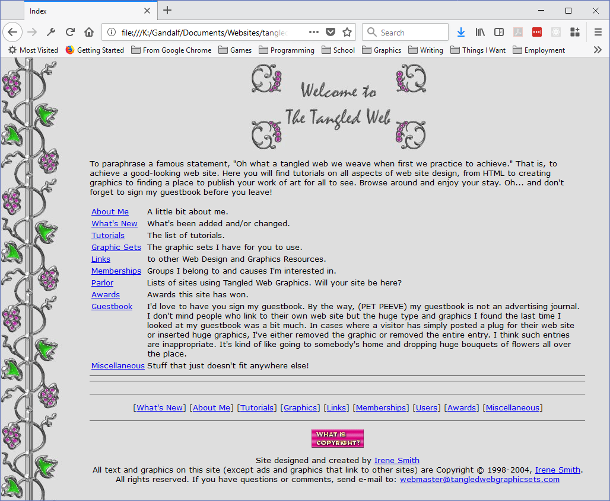
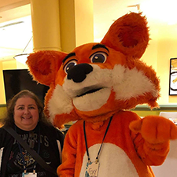

About this Website
Playing with HTML is a tutorial website created by Irene Smith. The site includes tutorials on HTML, CSS, JavaScript, graphics, and general web design.
This site is the spiritual successor to The Tangled Web, a site that used to exist on a free web host called Fortune City. The site was started in 1998 and was part of the then popular collection of websites that gave away free web graphic sets. It looked like this:
This site was laid out the old way, using tables but there are other ways to do things.
Don't worry, I'm not going to teach you 20-year old techniques here. Just showing you that I do have experience. I'm not offering graphic sets here either, but I do have tutorials and will be adding more on a regular basis. Tutorial categories include:
- HTML
- CSS
- JavaScript
- Graphics
If you don't know any web technologies, start with Your First Page and then go on from there. Oh, and you might want to stop off at Getting Ready for Web Design to get pointers to the tools you might want to work with.
About Irene
I am a writer, designer, and programmer. I have been programming since 1982 and started writing about programming and other technical subjects in 1989.
What started out as a hobby has become a career. As of 2019, I have worked for many well-known Tech companies including Microsoft, Google, and Mozilla. I am currently the Firefox Developer Content Manager for MDN Web docs, writing about Firefox Developer Tools and Browser Extensions.
I taught myself to create websites in 1996, when my son was an infant. Web Development started as a fun thing to do. Once I learned the rudiments of creating web pages, I went nuts and created websites at many of the free web hosts that were available back then, such places as GeoCities, Tripod, Fortune City, and more.
I have kept my skills up to date over the years, and now I want to pass my knowledge along. I hope you enjoy this website and that it teaches you something you didn't already know about web development.